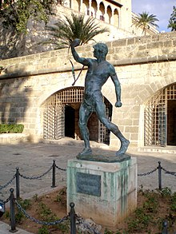

Foners balears formaren un cos d'exèrcit de l'edat antiga integrat per indígenes
de les Balears, presents tant a les tropes cartagineses com romanes, sobretot durant
el període posttalaiòtic o talaiòtic final. Ja foren presents a les guerres contra els grecs
a Sicília, de la fi del segle v i iv aC, així com a la II Guerra Púnica. Posteriorment
serviren com a tropes auxiliars d'infanteria lleugera en múltiples combats, entre
els quals cal esmentar la seva presència a les legions de Juli Cèsar a la Guerra de les
Gàl·lies. La provisió de soldats mercenaris es feia per lleves voluntàries, encara que
a la fase final de les guerres púniques els cartaginesos, impel·lits a reclutar noves tropes,
tengueren enfrontaments amb les poblacions balears i sembla que, almenys a Menorca, procediren
a lleves forçoses.
